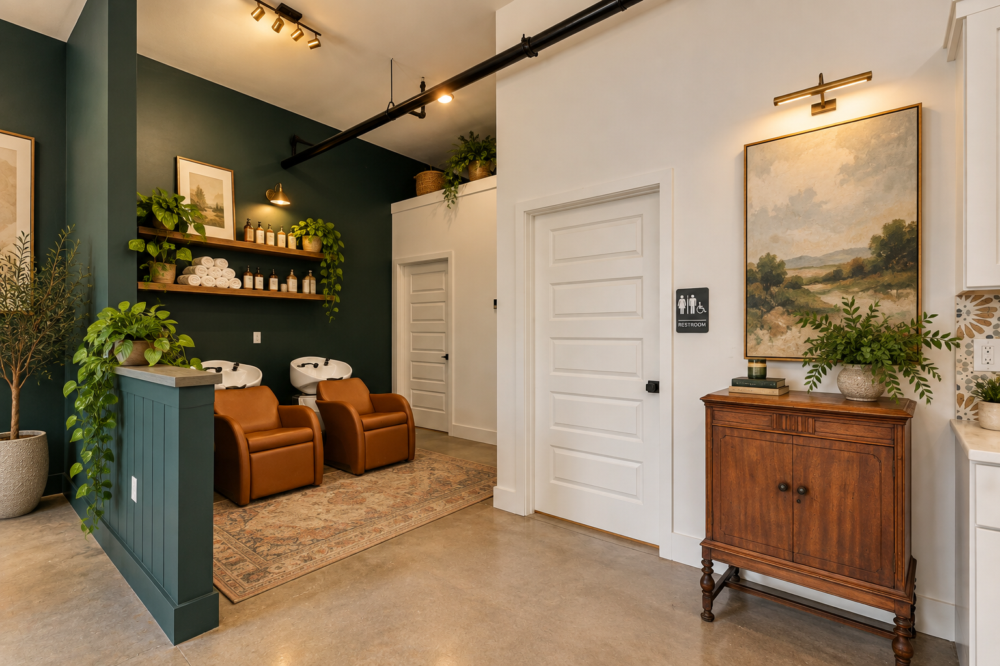
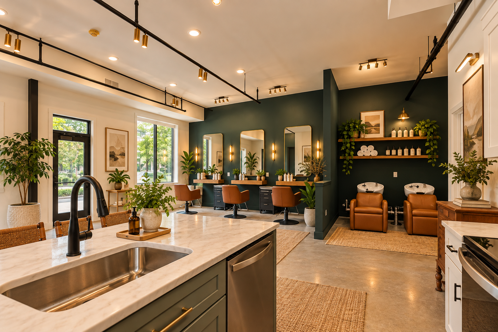

BYRD PARK · RICHMOND, VIRGINIA
Byrd Park
Mixed Use.
2200 Idlewood Avenue
THE PROJECT
Neighborhood life,
all under one roof.
A modern mixed-use destination designed around the rhythms of the neighborhood: a market, a cozy salon, and four thoughtfully planned apartments above — all within walking distance of Byrd Park's lakes and the Fan.
BYRD PARK MARKET
A market made
for the neighborhood.
At street level, Byrd Park Market brings the ease of a modern neighborhood market to the corner — a welcoming, walkable place designed to become part of everyday life in Byrd Park.
BRASS CANARY
A cozy salon
with its own identity.
Brass Canary adds a second neighborhood-scale business to the project. The salon pairs deep green walls, warm leather tones, natural wood and polished concrete for an intimate, collected atmosphere.
Together, the market and salon create an active ground floor while giving each storefront a distinct presence within one cohesive building.


THE PROJECT
Commerce below.
Homes above.


THE RESIDENCES
Designed for
everyday living.
Four apartments sit above the neighborhood storefronts, ranging from two to three bedrooms. Each residence includes two full bathrooms and its own dedicated laundry room.
The residential component brings modern city living to a walkable location near Byrd Park's lakes and the Fan, completing a project designed to blend neighborhood services and homes in one place.
THE NEIGHBORHOOD
Byrd Park,
connected.
Positioned within walking distance of Byrd Park's lakes and close to the Fan, the project was conceived as more than a building: a small neighborhood hub where daily errands, personal care and home come together.
START A CONVERSATION →